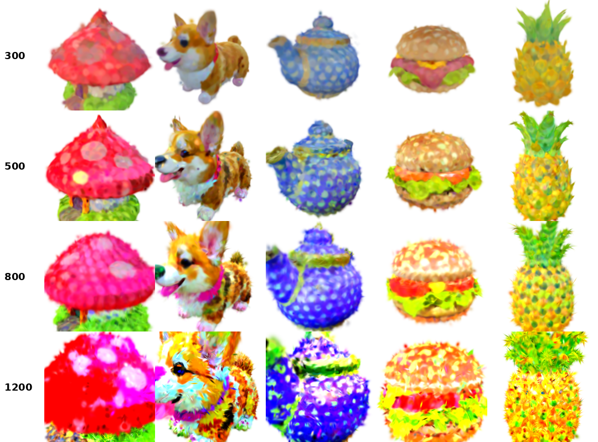
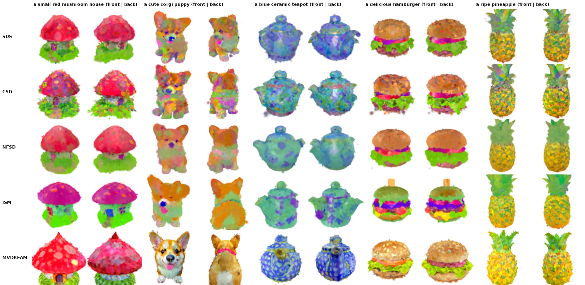

1 Generate (text → 3D)
Write a prompt that describes it without those words. When your 3D model is done, you get a preview verdict from 8 automatic views, then a photo shoot: light and frame the model yourself, take up to 3 photos, and the CLIP judge guesses which of 20 objects it is from your photos. If it guesses yours, you win points.
Static build: generation needs the local GPU server (python server.py). Pre-generated runs below are real outputs of that server.
- ETA
- –
- step
- –
- elapsed
- –
- SDS loss
- –
- timestep t
- –
- train res
- –
- #Gaussians
- –
- peak VRAM
- –
- |∇xyz|
- –
Gallery – click any model to render it
no runs yet
2 Real-time novel-view renderer
Stage your model for the judge: orbit to the best angle, move the light, pick a backdrop. Take up to 3 photos, then send them. The judge sees only your photos.

3 Optimisation monitor
4 Stress test
CUDA Gaussian rasterizer (DreamGaussian renderer, A100)
Forward render along a fixed 360° orbit, 10 warm-up frames excluded, synced timing; peak VRAM via torch.cuda.max_memory_allocated. Gaussian axis = k jittered clones per Gaussian at 512².
| axis | res | Gaussians | FPS | VRAM MB | notes |
|---|
Browser WebGL2 viewer (this page)
Same model replicated k× with jitter; FPS is requestAnimationFrame rate (display-capped), GPU ms from EXT_disjoint_timer_query when available, sort ms = worker depth sort.
| k | Gaussians | canvas | FPS | GPU ms | sort ms |
|---|
5 Improving DreamGaussian: guidance comparison (measured)
Same 5 prompts, seed 0, 500 steps, one free A100 per run. CLIP = ViT-L/14 similarity between prompt and 8 views (×100).
CSD / NFSD / ISM are added on the same frozen SD 2.1 (scripts/guidance_plus.py); MVDream is upstream's multi-view guidance.
| guidance | CLIP | SDS time | total | VRAM | verdict |
|---|
MVDream step count
| steps | CLIP | total | verdict |
|---|


6 What is running
- Text prompt yencoded once by the frozen SD-2.1-base text encoder
- 3D Gaussians θ5k random blob → positions, scales, rotations, opacity, colour
- Random camera celevation ±30°, full azimuth, radius 2.5
- Differentiable rasterizerCUDA tile splatting, x = g(θ, c), 128→512 px
- SDSadd noise at annealed t, UNet predicts ε̂ (CFG 100), ∇θ = w(t)(ε̂ − ε)·∂x/∂θ
- Adam + densify/prune500 steps; then save PLY, extract textured mesh
Plan vs. reality: Assignment 2 planned an SDS-guided NeRF (volume rendering). This MVP keeps the same diffusion-guided loop but optimises explicit 3D Gaussians with the official DreamGaussian code (Tang et al., ICLR 2024) for speed and feasibility. VSD and TRELLIS are not implemented.